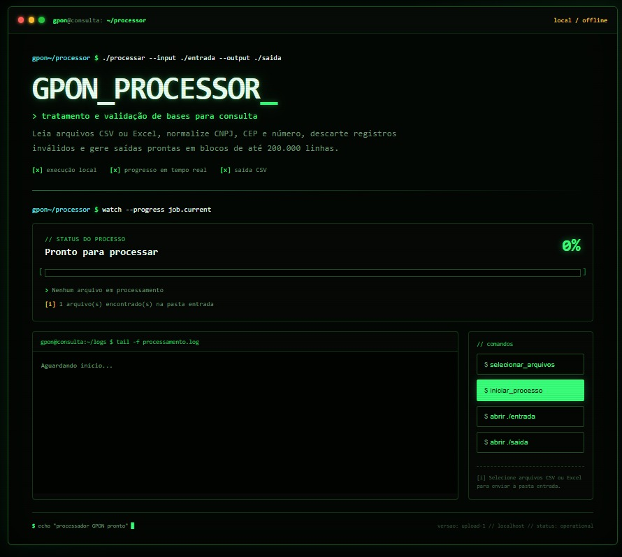

// projeto 01
GPON Processor
Bases enormes chegam com colunas fora de padrão e registros inválidos. O GPON Processor trata e valida bases para consulta de cobertura sem depender de internet.
- Detecta colunas de CNPJ, CEP, número e endereço automaticamente
- Normaliza, valida e descarta registros fora dos critérios
- Processa em blocos e divide saídas acima de 200 mil linhas
pythonpandasweb localoffline
